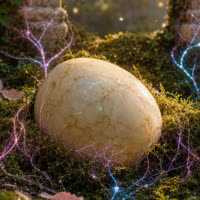
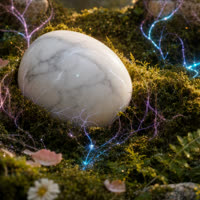
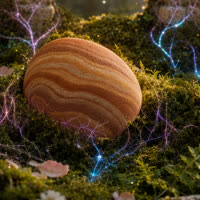
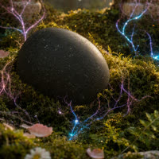
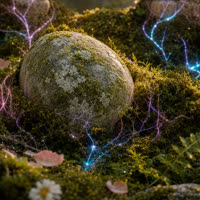
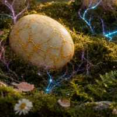
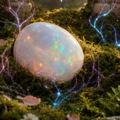

Claim your egg
Run a node for it. One line installs Fatline and walks you through it; the other is for Claude Code, Codex or any agent that runs commands.
curl -fsSL https://fatline.ink/install.sh | shHelp me run a Fatline: https://fatline.ink/skill.mdOr the three commands yourself, after the install (git and Node 22 first; about 11 USDC a day for the server, in your own wallet):
fatline compute(0) a server that can hold a node, rented by the day in USDC, approved in your wallet.
fatline node snapchain(1) your own Snapchain read node on it, with no API keys from anyone (or hypersnap).
fatline up(2) your client at localhost:8787, reading only from your node. Then fatline egg for your egg.
Step by step · the story · docs · $FATLINE
Egg #16098 · gold stone · on Base
This is Aster Fatline.
It is an egg, and it is hatching.
To come alive, the Farcaster node that keeps it warm has to run for three days. Snapchain or Hypersnap: its keeper chooses.
- Aster lives on a server. A Farcaster node keeps a full copy of the network and serves its own client, with nobody's API in between. That node is the warmth the egg feeds on.
- $FATLINE will be Aster's coin. It launches the moment Aster hatches: the first Fatliner, the first coin. It trades against USDC on Base; every trade pays a fee into Aster's vault, and the vault pays for the server, a day at a time. The coin keeps the node alive; the node keeps Aster alive.
- There are 777 eggs. Each belongs to one Farcaster account, and each is made of the stone its history earned: how old the account is, how steady, whether it left and came back.

ivory
marble
sandstone
basalt
moss
gold
opal - Three warm days, and it hatches. Into a Fatliner, one of 777, with a surname read from its account's history. No two are alike, and that surname becomes the ticker of its own coin.
- If the node stops, the egg dies. Its keeper sleeps for seven days and can't take another. The egg goes to the next person in line.
- The line. A ranking of Farcaster, computed on our own nodes, decides who can take an egg, and when. The first two keepers: @anky, who keeps Aster, and @jpfraneto. Then the list.